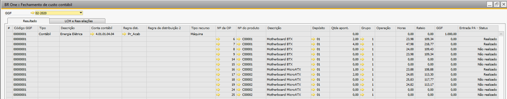

Fechamento de custo contábil
Nesta tela será realizado o fechamento de custo contábil para os GGFs cadastrados na tela de Cadastro de GGF, podendo ser executado um único ou para cada filial.
{kind=link}
Antes de realizar o fechamento de custo contábil, devem ser configurados dois campos importantes para o processo na tela Configurações de produção na aba Custos.
Fechamento de custos
Previsto
Apontamento de horas
Conta de alocação temporária de custos
Conta de refugo
Ao escolher um GGF, existem 2 botões na tela que podem ser utilizados, são eles:
Simular
Processar
Para processar um fechamento, é necessário simular antes, através do botão Simular.
O botão processar só será habilitado a partir do primeiro dia do mês seguinte, ou seja, se o GGF é do mês 05/2020, o botão Processar só será habilitado a partir do dia 01/06/2020.
Se o campo Conta para apontamentos de refugo estiver vazio, ao tentar simular, a seguinte mensagem será exibida:
{kind=link}
BR One :: Conta contábil “Conta para apontamentos de refugo” deve estar configurada antes da execução deste processo.
Ao clicar no botão Simular, o fechamento será simulado e a seguinte tela será exibida enquanto a simulação é carregada:

Se a simulação for concluída com sucesso, a seguinte mensagem aparecerá:
{kind=link}
BR One :: Fechamento de custos calculado.
Se as informações não puderem ser carregadas, a seguinte mensagem será exibida:
Falha ao carregar informações.
Se ao processar a simulação do fechamento de custos houver recursividade nas OPs, ou seja, a OP 1 tem no cabeçalho o item A e entre seus componentes os itens B e C, e a OP 2 tem no cabeçalho o item B e entre seus componentes os itens D e E.
Caso o usuário insira como componente o item A na OP 2, ele estará utilizando o item pai (A) como item filho na OP 2.
O fechamento de custo será simulado conforme as configurações determinadas no cadastro do GGF e configurações de produção aba Custo, podendo ser por filial ou não.
A validação por filial será a partir do cadastro do GGF, e ao entrar no Fechamento de custo serão listados todos os meses/ano por filial para serem simulados e processados.
Se utilizado por filial, as OPs dentro da simulação/processamento serão apenas da filial vinculada no cadastro do GGF selecionado.
Ao simular o fechamento, não será possível, e será exibida a tela OPs com problemas na recursividade, informando as OPs que impedem o fechamento de custos:
{kind=link}
No exemplo acima, a OP 2059 de item pai I05983 tem como item filho o item I05993.
{kind=link}
E o item I05993 é item pai da OP 1061 que tem o item I05983 como item filho.
{kind=link}
Para resolver essa situação, é necessário marcar a flag Ignorar no fechamento de custos na aba Custos da OP.
{kind=link}
OBS.: Caso o usuário tente adicionar uma Entrada de PA ou Saída de insumos em uma OP que está com a flag Ignorar no fechamento de custos marcada, exibirá a seguinte mensagem:
{kind=link}
Não é possível efetuar o processo quando a flag “Ignorar no fechamento de custos” estiver marcado.
Quando a flag estiver marcada, ao simular o fechamento de custos, a OP será desconsiderada no fechamento.
Após a simulação ser finalizada, será carregado na tela nas abas Resultado e LCM e Reavaliações a simulação criada para aquele mês, ano e filial selecionado no campo GGF. Para calcular o LCM e Reavaliações, é realizado o cálculo do LLC (LowLevelCode) do maior nível para o menor.
Por exemplo:
Se uma OP A (nível 0) tem os itens B (nível 1) e C (nível 1) e para utilizar o item B, são necessários os itens D (nível 2) e E (nível 2), então o LLC irá começar a ser calculado do nível 2 (itens D e E), depois o nível 1 (B e C) e por último nível 0 (item A).
{kind=link}
Após concluída a simulação, o botão Validações Inativos ficará ativo e ao seleciona-lo a mensagem na tela para verificar itens, depósitos ou conta inativa na simulação será exibido e processo de verificação será executado.
{kind=link}
A aba Resultado exibe todas as linhas cadastradas no Cadastro de GGF e todas as OPs que tiveram rateio conforme regra do GGF cadastrado, este rateio pode ser por:
Quantidade
Horas maquina
Horas mão de obra
Hora ferramenta
Serão apresentadas todas as Ordens de Produção que registraram a Entrada de Produto Acabado durante o mês de encerramento para filial do cadastro do GGF, independentemente do depósito da filial onde essa entrada tenha ocorrido. Todas essas entradas serão consideradas para rateio..

No exemplo acima foi feita a simulação para o mês 05/2023 com a forma de rateio Quantidade, dividindo o valor do GGF de R$40.000 entre o total da quantidade de todas as OPs que fizeram entrada de PA.
O valor do rateio para cada OP será dividido proporcionalmente.
O cálculo realizado é da seguinte forma:
Rateio por Quantidade
Valor do rateio = (Qtde apont. da linha * Valor do GGF) / Soma da coluna Qtde apont. por conta contábil do GGF
Rateio por Horas (máquina, mão de obra, ferramenta)
Valor do rateio = (Horas da linha * Valor do GGF) / Soma da coluna Horas por conta contábil do GGF
Pelo exemplo citado o cadastro do GGF está por rateio por quantidade:
A soma da coluna Qtde apont. por conta contábil do GGF apontada é 48.
A Qtde apont. da linha da OP 340 é 1.
O Valor do GGF é R$40.000.
Logo o cálculo para encontrar o Rateio dessa linha será:
Valor do rateio = (Qtde apont. da linha * Valor do GGF) / Soma da coluna Qtde apont. por conta contábil do GGF
Valor do rateio = (1 * 40.000) / 48
Valor do rateio = 40.000 / 48
Valor do rateio = 833,33
Então, para a OP 340, a coluna Rateio terá o valor de 833,33.
{kind=link}
Na aba LCM e Reavaliações são apresentados todos os LCMs e todas as reavaliações que serão necessárias realizar para compor os custos do gasto do mês.
Aqui são listados os lançamentos realizados no processo de validação do item rateado na aba resultado.
{kind=link}
Se o parâmetro Utilizar GGF antecipado estiver marcado. Após a simulação será carregada também uma linha para que seja gerado um LCM (ao processar) com o valor total acumulado da conta de GGF antecipado do período do GGF contra a conta contábil de alocação temporária.
Crédito: Conta de alocação temporária
Débito: Conta de GFF antecipado
{kind=link}
O valor é a soma de todos os LCM de antecipado no mês do fechamento referente as OPs que estão na aba Resultado.
Após simular o fechamento, ele poderá ser processado.
Clique em Processar.
{kind=link}
Caso o usuário tenha apenas a versão para teste, a seguinte mensagem será exibida ao clicar em Processar:
BR One :: Processo liberado apenas para homologação.
Ao clicar em Processar, a seguinte mensagem será exibida, alertando que não será possível realizar lançamentos referentes à produção no período processado:
{kind=link}
BR One :: Este processo é irreversível e impossibilitará a realização de lançamentos referentes à produção no período processado. Continuar?
Ao clicar em Sim, o processo será continuado, e em Não, o processo será abortado.
Se houver um cadastro de GGF de um mês anterior aberto, a seguinte mensagem será exibida:

BR One :: Existem GGFs anteriores a este que ainda não estão em aberto. Se for feito o processamento para o GGF atual, não será mais possível processar os anteriores.
Continuar?
Ao clicar em Sim, a seguinte mensagem será exibida:

BR One :: Este processo irá gerar diversos LCMs e reavaliações de estoque. Devido a isto o processamento pode ser demorado e eventualmente o client do SAP pode apresentar congelamentos.
Recomendações para processamento:
Realizar no servidor ou em uma máquina com boa capacidade de processamento e que esteja conectada na rede via cabo.
Realizar em um período em que o BD não esteja com outros processamentos e não esteja com outros usuários conectados no SAP.
Realizar backup dos BDs do SAP e UPP_BRONE antes de realizar o processamento. Continuar?
Ao clicar em Sim, o fechamento será processado e não será mais possível realizar o fechamento de custo contábil para meses anteriores. Ao clicar em Não, o processo será abortado.
{kind=link}
Se não houver dados para processar e o usuário clicar em Processar, o fechamento não será executado e a seguinte mensagem será exibida:
BR One :: Erro ao processar. Retorno: (Falha ao gravar valores de GGFs pendentes).
Enquanto o fechamento estiver sendo processado, as seguintes mensagens aparecerão:

Sendo assim:
{kind=link}
BR One :: Gerando Lançamentos contábeis e Reavaliações do estoque. Aguarde…

Sendo assim:

BR One :: Gerando LCM inicial agrupando o GGF. Aguarde…
{kind=link}
BR One :: Gerando LCMs necessários. Aguarde… BR One :: Atualizando OPs necessárias. Aguarde…
{kind=link}
Caso tenha ocorrido algum erro no processo, uma mensagem de erro será exibida indicando o erro:
BR One :: Erro ao processar. Retorno: (x)
Se o processo for concluído com sucesso, a seguinte mensagem será exibida:
{kind=link}
BR One :: Processamento concluído.
Após o processo, o registro do GGF utilizado estará com o status Fechado e não será possível alterar nenhum campo.
{kind=link}
A tela Fechamento de custo contábil também ficará com os campos e botões desabilitados, impedindo assim a edição dos campos.
{kind=link}
Todos os LCMs e Reavaliações de estoque da aba LCM e Reavaliações serão criados.
Logo, podem ser consultados individualmente através da coluna Documento.

Será gerado um LCM se o item não tiver estoque e já foi dada a saída para ele.
Se o item tiver estoque, será gerada uma reavaliação.
É gerado um LCM para cada LLC (LowLevelCode).
Exemplo de LCM:
Conta de Crédito: Conta de alocação temporária
Conta de Débito: Conta de Material Vendidos – CPV
{kind=link}
Exemplo de Reavaliação do estoque:
Conta de Crédito: Conta de alocação temporária
Conta de Débito: Conta de Estoque
{kind=link}
Caso o Item seja identificado como um semi acabado, consumido dentro de outra Ordem de Produção, o seguinte LCM é realizado:
Conta de Crédito: Conta de alocação temporária
Conta de Débito: Conta de material em processo – WIP
Quando a quantidade de estoque no último dia do mês do processamento for maior que zero e a quantidade em estoque do dia atual do processamento for igual a 0, será gerado um LCM com a conta de débito igual à Conta de estoque não alocado e a conta de crédito igual à Conta de alocação temporária de custos.
Também será gerado um novo LCM com a conta de crédito igual à Conta de estoque não alocado e a conta de débito CPV (Conta de materiais vendidos), com a data atual do processamento.
A seguir temos alguns exemplos de lançamentos de LCM:
O add-on verifica a quantidade em estoque no depósito que foi realizado a entrada de PA no último dia do mês que está sendo processado.
Se o mês processado é 05/2023 ele valida a quantidade de estoque no dia 31/05/2023, nesse exemplo foi realizado o total de 80 PA no mês 05/2023.
Validações:
Caso a quantidade encontrada no estoque no dia 31/05/2023 seja 0, e no dia atual da simulação possua 80, o add-on realiza os seguintes lançamentos, mesmo que no dia atual tenha estoque:
{kind=link}
Caso a quantidade encontrada no estoque no dia 31/05/2023 = 80, e no dia atual da simulação possua 80, o add-on realiza os seguintes lançamentos:
{kind=link}
Caso a quantidade encontrada no estoque no dia 31/05/2023 = 80 que é a quantidade realizada na entrada desse PA, e no dia atual da simulação possua 45 em estoque, o add-on joga o valor total dos 80 que seriam reavaliados na quantidade de 45 aumentando o custo do item.
Gerando os seguintes lançamentos:
{kind=link}
Caso o add-on identifique que o PA foi consumido em outra Ordem de produção, será gerado os seguintes lançamentos:
{kind=link}
Caso a quantidade encontrada no estoque no dia 31/05/2023 = 50 e a quantidade realizada na entrada desse PA foi de 80, e no dia atual da simulação possua 45 em estoque, o add-on joga o valor total dos 50 que seriam reavaliados na quantidade de 45 aumentando o custo do item e realiza um LCM para conta de material vendido de 30.
Gerando os seguintes lançamentos:
{kind=link}
Caso a quantidade encontrada no estoque no dia 31/05/2023 = 80 e a quantidade realizada na entrada desse PA foi de 80, e no dia atual da simulação não possua estoque, o add-on realiza os seguintes lançamentos:
Será gerado um LCM no último dia do mês do fechamento de custo 31/05/2023 nas contas:
Conta de crédito: Conta de alocação temporária de custos
Conta de débito: Conta de estoque não alocado
E será gerado um novo LCM com a data atual do processamento do fechamento de custo nas contas:
Conta de crédito: Conta de estoque não alocado
Conta de débito: Conta de Material Vendidos – CPV
{kind=link}
Isso só ocorre nesse cenário onde no último dia do mês havia quantidade e na data da simulação/processamento não tenha nenhuma quantidade.
Após o fechamento ser processado, ele poderá ser consultado novamente.
Para isso, basta navegar entre os registros ou clicar em Procurar no menu e, em seguida, selecionar um fechamento no campo GGF.
Ao selecionar, ele será carregado automaticamente.
{kind=link}
{kind=link}
Fechamento de Custo antecipado
Será considerado no apontamento do Produto Acabado o custo hora do recurso antecipado (planejado) que será agregado ao custo do Produto Acabado, no momento da entrada do produto acabado da Ordem de Produção e posteriormente, ser considerado no fechamento de custo.
Produto Acabado
Para composição do custo antecipado dos recursos que serão agregados no produto acabado, será verificado o tempo planejado do grupo de recurso na Ordem de Produção, e o parâmetro de Custo Múltiplos do Recurso nas Configurações de produção na aba Geral para recuperar o custo hora que será calculado de acordo com o tempo planejado.
Pontos a serem considerados:
Será recuperada a UNIDADE MEDIDA DE TEMPO das Configurações de produção para validar a quantidade de hora planejada do recurso.
O custo antecipado só será calculado para recursos que estiverem nas operações que não forem externas, ou seja, recursos de operações externas serão ignorados no cálculo do custo antecipado.
Para encontrar o custo do Recurso que será incluído no Produto Acabado, deverá ser realizado o seguinte cálculo:
Custo dos Recursos por unidade de PA= (Custo do recurso encontrado * tempo planejado em horas / quantidade planejada do produto acabado)
Esse custo é o que será agregado ao custo unitário atual do produto acabado.
O custo unitário do produto acabado será composto pelo custo do material próprio (A) (não pode ser item de terceiro em minha propriedade), somado ao custo do recurso por PA (B) (somente operações internas) e ao custo de Terceiro (se aplicável) (C).
(A) O Custo do Material próprio será o valor total da saída de materiais próprios dividido pela quantidade do produto acabado. (B) O Custo do Recurso será o valor do custo hora do cadastro do recurso ou grupo de recurso multiplicado pelo tempo planejado em horas dividido pela quantidade planejada do produto acabado. (C) O Custo de Terceiro ocorre nos casos de compra de beneficiamento e composto pelo valor da Nota Fiscal de Entrada do serviço de industrialização, gravada no campo da Ordem de Produção “Rateio de Custo de Terceiro”
O custo por produto acabado será (A) + (B) + (C)
No custo da hora do recurso, caso esteja com valor ZERO, deverá recuperar o Custo hora do Grupo de Recurso. Caso exista mais de um recurso na ordem de Produção e algum não possuir custo hora, esse recurso deverá ser o custo hora do Grupo de recurso.
Ao adicionar o Produto acabado, será gerado um LCM adicional. Nesse LCM, deverá ser considerada a quantidade total apontada na Entrada de Produto acabado e multiplicar pelo custo do recurso por unidade de PA.
Custo do Recurso Total PA= (Custo do recurso do encontrado * tempo planejado em horas / quantidade planejada do produto acabado) * Quantidade apontada de PA
Custo do Recurso Total PA= (50,00 * 2 / 10) * 6
Custo do Recurso Total PA= 60,00
Custo do recurso:
{kind=link}
Tempo planejado em horas e quantidade planejada do produto acabado:
{kind=link}
Quantidade apontada de PA:
{kind=link}
{kind=link}
Esse LCM será gerado automaticamente com o custo do recurso calculado, de acordo com a quantidade que foi realizada a entrada de Produto Acabado. No exemplo, o custo antecipado será R$60,00 para 06 unidades do Produto Acabado.
{kind=link}
Serão recuperadas as seguintes contas:
Débito: Conta de Material em Processo (Depósito do Produto Acabado que está realizando a entrada).
Crédito: Conta GGF antecipado.
{kind=link}
Fechamento custo contábil
No Fechamento do Custo Contábil será recuperado o valor antecipado já inserido no custo do Produto acabado da Ordem de Produção e esses valores serão utilizados para o fechamento de custo contábil novo.
Sendo assim, será recuperado o valor total acumulado da conta de GGF antecipado do período do GGF e realizado um LCM com a conta contábil de alocação temporária, ambas definidas nas Configurações de Produção ([1.12.1](#_bookmark13)).
Débito: Conta GGF antecipado.
Crédito: Conta de Alocação Temporária de custos.
Esse LCM será mostrado na tela de Fechamento de Custos na aba LCM e Reavaliações.
A conta parametrizada nas configurações de Produção “Conta de GGF antecipado” só será utilizada para os LCMs desse processo.
Fechamento 100% Refugo
Quando uma Ordem de produção possui custo pendente para ser alocado e ela for fechada, ao realizar o fechamento de custos e detectar que este custo foi gasto apenas para a geração de refugos, uma vez que não foi realizada nenhuma entrada após a alocação deste custo, neste momento será realizado um Lançamento contábil manual creditando a Conta de alocação temporária de custos e debitando a Conta para apontamentos de refugo.
No exemplo abaixo, foi criado um GGF para o mês de Fevereiro/2020 com o recurso Horas Máquina e com o valor R$1.000.
{kind=link}
A Conta de alocação temporário de custos é a 1.01.01.01.02 e a Conta para apontamentos de refugo
{kind=link}
Ao simular o fechamento de custo de fevereiro/2020, no caso das OPs 6 e 7, ambas contêm entrada de PA, apontamento de produção e estão fechadas.
Nesse caso, entrarão no processo normal de fechamento de custo.
No caso das OPs 8 e 9, as OPs tem apontamento de produção, mas não possuem entrada de PA (ambas estão fechadas), logo, possui um custo pendente a ser rateado que ficará numa conta transitória, e será gerado um LCM repassando o custo pendente para a conta de refugo 1.12.1.14.
No caso das OPs 14 e 15, são OPs que possuem apontamento de produção sem data/hora final, não possuem entrada de PA e estão fechadas, não recebendo custo de rateio no fechamento de custo.
{kind=link}
Na aba LCM e Reavaliações, os dois últimos LCMs fazem parte do processo, no qual podemos observar que não possuem quantidade (é rateado no cadastro de GGF somente Horas Máquina) mas possuem custo, sendo que a conta 1.01.01.01.02 é uma conta temporária de alocação de recursos e foi criado um LCM para a conta de refugo 1.01.01.02.01.
Há duas linhas de LCM de lançamento em conta de refugo devido ao processo agrupar por item, ou seja, o processo agrupa todos os itens de mesmo código e gera um único lançamento contábil manual.
{kind=link}
Após processar, o LCM nº 925 foi gerado e o custo pendente na conta temporária de alocação de recursos foi realocado para a conta correta de refugo.
{kind=link}
{kind=link}